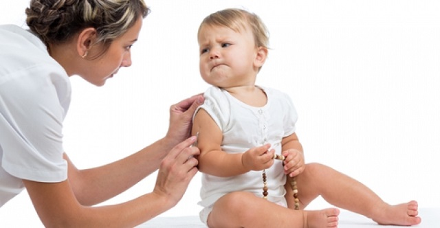
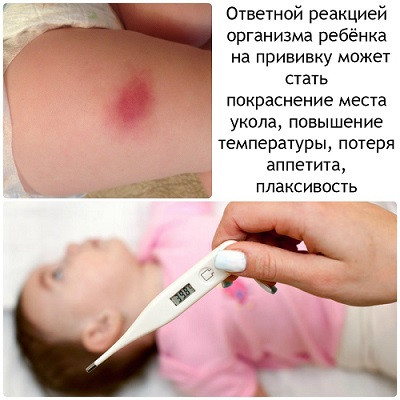
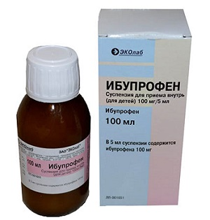

Вакцинация — очень важная составляющая профилактики заболеваний в нашей стране. К сожалению, у некоторых детей развиваются реакции на эти уколы. К счастью, в большинстве случаев эти реакции довольно легкие и безобидные. В очень редких случаях у ребенка может развиться более серьезная реакция. В этом разделе мы обсудим легкие и ожидаемые реакции на прививки и то, как вы можете с ними справиться. Мы также расскажем вам, как распознать более серьезную реакцию.
ОЖИДАЕМЫЕ РЕАКЦИИ НА ПРИВИВКУ
У большинства детей вполне вероятно проявление по крайней мере хоть какой-то реакции на прививку. Вот список того, что вы, возможно, будете наблюдать у своего ребенка, и советы, как уменьшить дискомфортные ощущения у него.
Беспокойство. Это самая распространенная реакция. Большинство детей будут чувствовать боль от укола, а затем — болезненность мышц на протяжении нескольких часов или даже дней, поскольку раствор вакцины может вызвать раздражение кожи или мышц.
Лихорадка. Она встречается довольно часто. У многих детей будет слабая лихорадка. У некоторых возможна сильная лихорадка 1—2 дня. Это происходит из-за того, что иммунная система реагирует на вакцину.
Покраснение и припухлость в месте укола. У некоторых детей может появиться умеренное покраснение и припухлость от прививки.
Долговременная припухлость в месте укола. Это иногда происходит, поскольку после рассасывания гематомы остается кармашек с кальцинатом. Эта припухлость безобидна и пройдет через 1—2 месяца.
Сыпь. Две прививки, КПК (корь — паротит — краснуха) и против ветряной оспы, известны тем, что являются причиной появления общей сыпи по всему телу примерно через неделю после вакцинации. Это нормальная реакция иммунитета на вакцину, и эта сыпь не представляет опасности.
Сильное распухание и покраснение плеча или бедра. В редких случаях у ребенка возможно появление очень сильного отека всей верхней части конечности, в которую вводилась вакцина. Это смесь раздражения на ингредиенты вакцины и аллергической реакции. Вы можете контролировать эту реакцию, используя описанные ниже меры, но это может означать, что не следует больше прививать этой вакциной.
На самом деле ни одна из этих реакций не требует обращения к врачу в не приёмные часы. Расскажите врачу, как ребенок себя чувствовал, при следующем визите.

ЛЕЧЕНИЕ И ПРОФИЛАКТИКА ОЖИДАЕМЫХ РЕАКЦИЙ
Перед прививкой. Вот некоторые меры, которые вы можете предпринять перед тем, как вашему ребенку сделают прививку, чтобы предотвратить появление неприятных реакций:
Дайте ребенку (если ему уже больше 3 месяцев) ибупрофен примерно за 30 минут до прививки, чтобы уменьшить боль и воспаление. Также в любом возрасте разрешен ацетаминофен, но он может оказаться неэффективным.
СОВЕТ ДОКТОРОВ СИРС: НЕ ПЕРЕБАРЩИВАЙТЕ С ЛЕКАРСТВАМИ Если у вашего ребенка выраженная реакция на вакцину, например, высокая лихорадка и сильное беспокойство, полезно будет применить ибупрофен. Тем не менее не пичкайте ребенка лекарством круглосуточно. Время от времени дайте его действию пройти, чтобы вы могли проверить самочувствие своего ребенка. Вы ведь не хотите маскировать серьезную реакцию. Если у вашего ребенка настолько сильная реакция, что ему необходимо круглосуточно давать лекарства в течение нескольких дней, это может говорить о том, что вам нужно быть более внимательными при ревакцинации. |
После прививки. Вот несколько способов уменьшения боли и дискомфорта после прививки:
• Приложите лед (завернутый в салфетку) на места укола на 5 минут после введения вакцины. Вы можете продолжать периодически прикладывать лед в течение нескольких дней, если замечаете какое-либо покраснение или отек в месте укола. Это особенно полезно при сильном отеке.
• При необходимости можно продолжать давать ребенку ибупрофен или ацетаминофен в течение нескольких дней для уменьшения лихорадки и беспокойства. Не привыкайте давать эти лекарства без видимых причин; используйте их только тогда, когда необходимо.

• Арника — гомеопатическое средство, которое можно давать перорально или втирать в место укола для уменьшения отека.
• Антигистаминные препараты (супрастин, фенистил) можно давать ребенку при сильном отеке или появлении других признаков аллергической реакции.
КОГДА БЕСПОКОИТЬСЯ
В редких случаях вакцина может вызвать серьезные реакции. Считается, что это происходит в 1 случае из 100 000, хотя точная статистика неизвестна. К таким реакциям относятся судороги, воспаление и отек мозга (энцефалит), различные дисфункции нервной системы, внезапный обморок или шок, сильные аллергические реакции, аутоиммунные реакции и дисфункции различных органов. Мы не знаем, как можно предугадать или предупредить эти реакции. К счастью, они встречаются крайне редко. Если у вашего ребенка наблюдается одна из этих сильный реакций, немедленно обратитесь к врачу или позвоните по телефону 03, если это неотложный случай.
СОВЕТ ДОКТОРОВ СИРС: НЕ ИГНОРИРУЙТЕ ЧРЕЗМЕРНЫЕ БЕСПОКОЙСТВО И ЛИХОРАДКУ Очень редкой реакцией, которая иногда встречается, является энцефалит. Это происходит, когда компоненты вакцины раздражают нервную систему и вызывают воспаление в мозге. Сам мозг при этом немного отекает и краснеет (если бы вы могли его увидеть). В течение нескольких дней у ребенка будет высокая лихорадка, сопровождаемая крайним беспокойством. Он может подолгу и сильно плакать. Затем реакция ослабевает, воспаление и отек уменьшаются, и ребенок снова становится счастливым самим собой. Хотя в этом определенно нет абсолютно ничего хорошего, фактически все дети переносят эту реакцию без каких-либо последующих проблем. По мере необходимости каждые 6 часов можно давать ибупрофен, чтобы уменьшить воспаление и лихорадку, насколько это возможно. Тем не менее, если все те же самые прививки будут сделаны снова, в следующий раз эта реакция может быть тяжелее и привести к развитию неврологических повреждений. Мы рекомендуем вам поговорить с вашим врачом перед проведением ревакцинации, чтобы снизить риск. |
Здоровье ребенка от докторов Сирс / Сирс У. и др.